| 氏名 | 入佐 啓士 |
|---|---|
| クラス | 理科 1 類 37 組 |
| 学生証番号 | J4-220897 |
(例題のため省略)
$ python shadedCube.py
(文字列の表示なし)
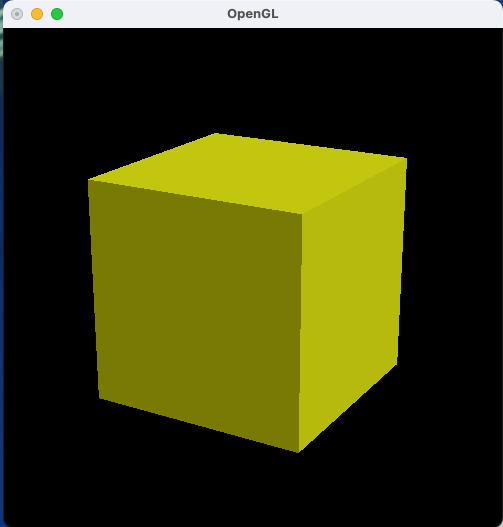
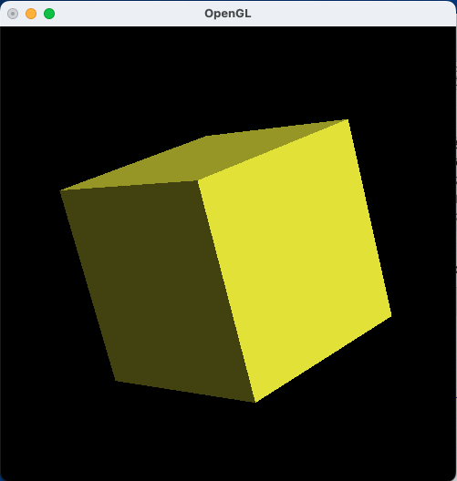
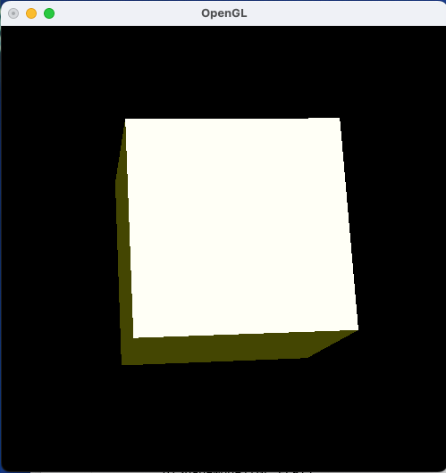
今回は、シェーディングした立方体の描画をするプログラムを走らせた。
ShadedCubeのコンストラクタで拡散成分、鏡面成分、鏡面反射の減衰係数を新たに設定し、親クラスのmaterialメソッドでそれらを反映させる。
実行結果は画像の通りで、影がついており手前の右上側から光が当たったように描画されている。画像の3枚目のようにある特定の位置において面が白色になることがあった。面の法線が光源への方向ベクトルと同じ方向の際にこうした現象が起こるため、鏡面成分によるものだと考える。
(例題のため省略)
$ python shadedIcosahedron.py
(文字列の表示なし)
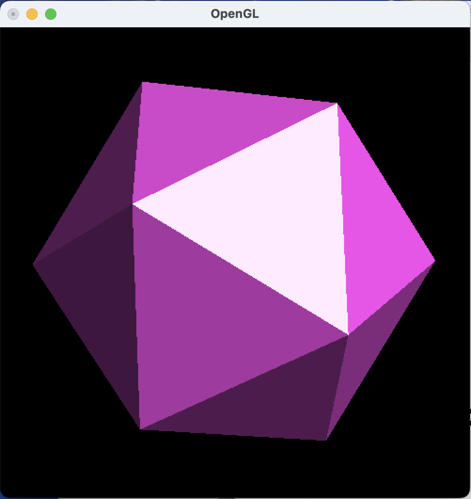
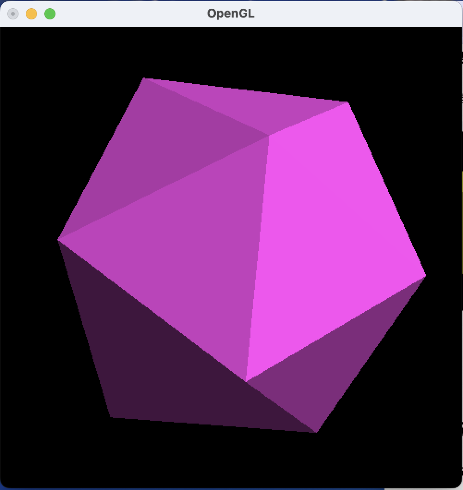
今回は、シェーディングを施した正二十面体を描画するプログラムを走らせた。
コンストラクタで新たに拡散成分、鏡面成分、減衰係数を設定したため、実行結果は画像の通りで、手前は光沢があり奥は暗いため立体感がある正二十面体が得られた。
(例題のため省略)
$ python shadedSubdivision.py 2
$ python shadedSubdivision.py 3
$ python shadedSubdivision.py 4
(文字列の表示なし)
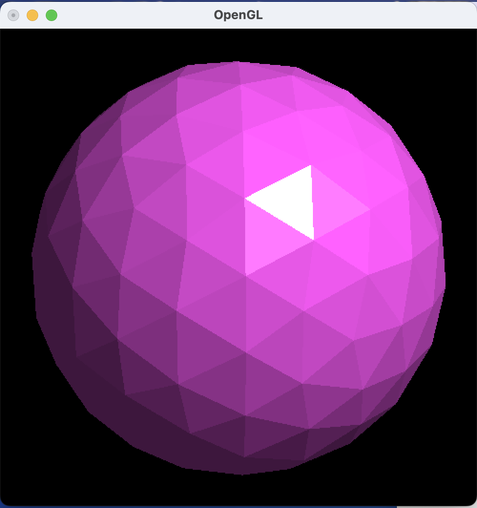
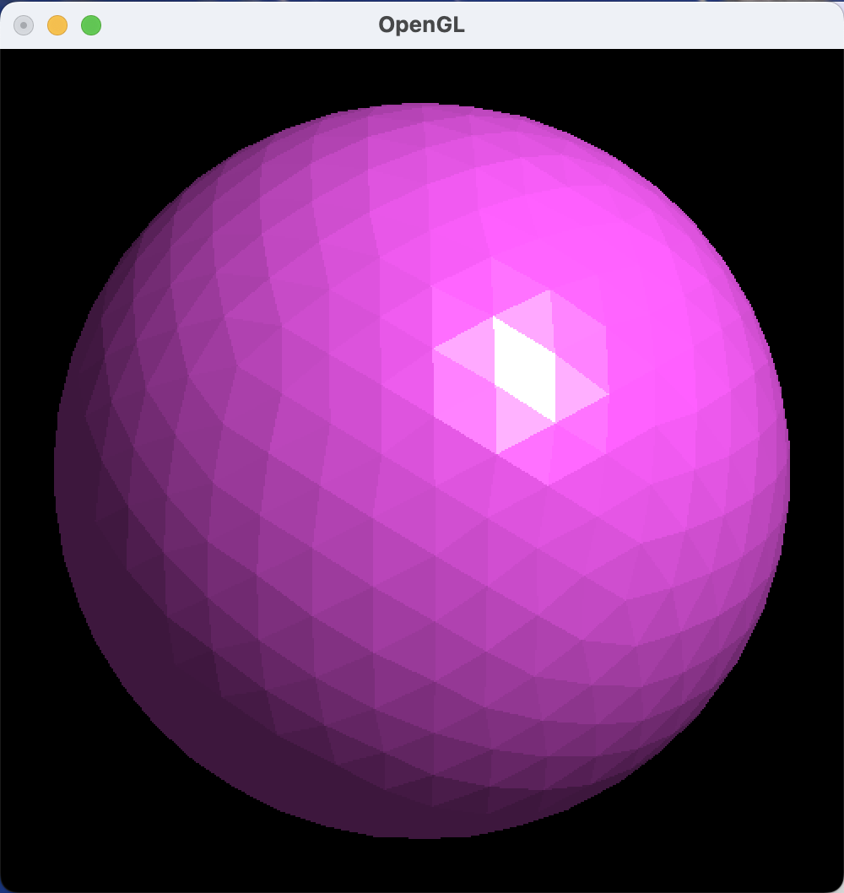
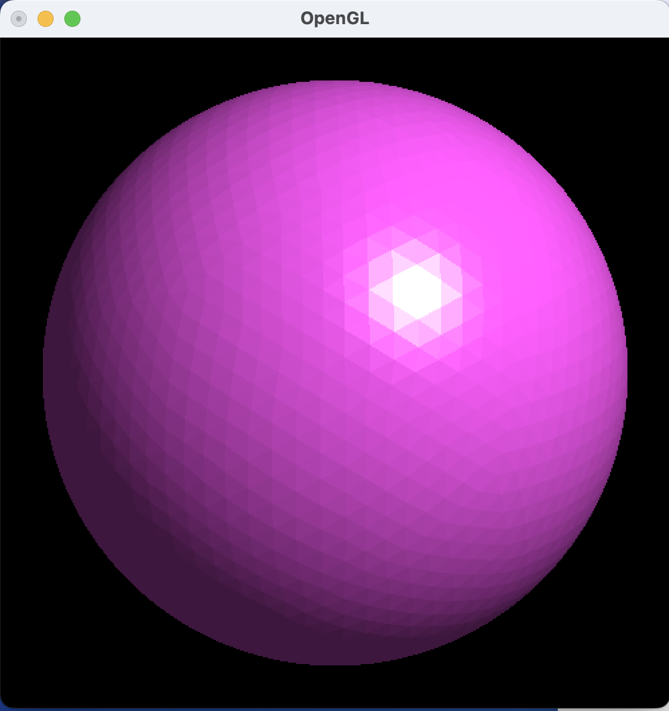
今回は、三角形を再帰的に分割することで正二十面体を球面に近似するプログラムを走らせた。
多面体の各面の稜線を2等分する点を多面体の外接球面にまで持ち上げる処理をsplitメソッドで定義して、フラクタル図形のように再帰的に繰り返すことでより球面に近く近似できる。
実行結果は画像の通りで、再帰回数2回の一枚目の場合はゴルフボールのような粗さだが、回数を増やすにつれ、球面に近づいた。しかし反射光によって各面ごとの明るさが微妙に異なるため、稜線が目立ち球面らしさが失われている。
(例題のため省略)
$ python shadedSphere.py 0
$ python shadedSphere.py 1
$ python shadedSphere.py 2
(文字列の表示なし)
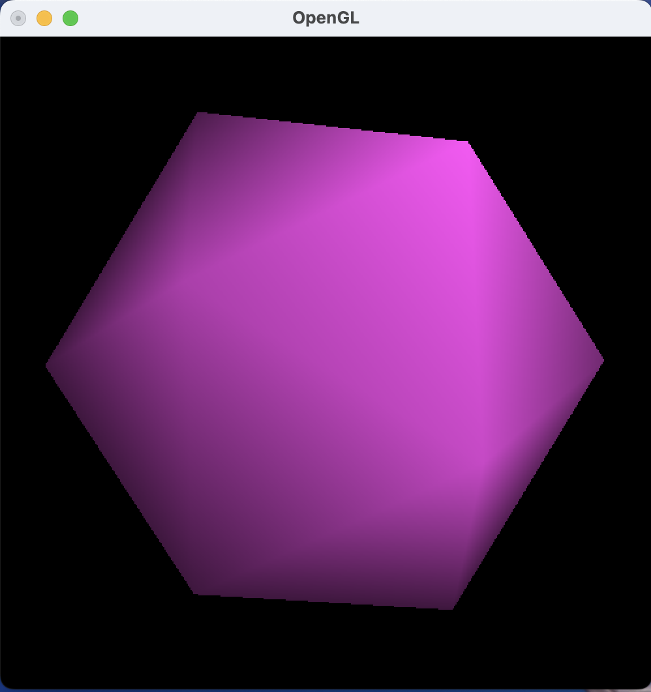
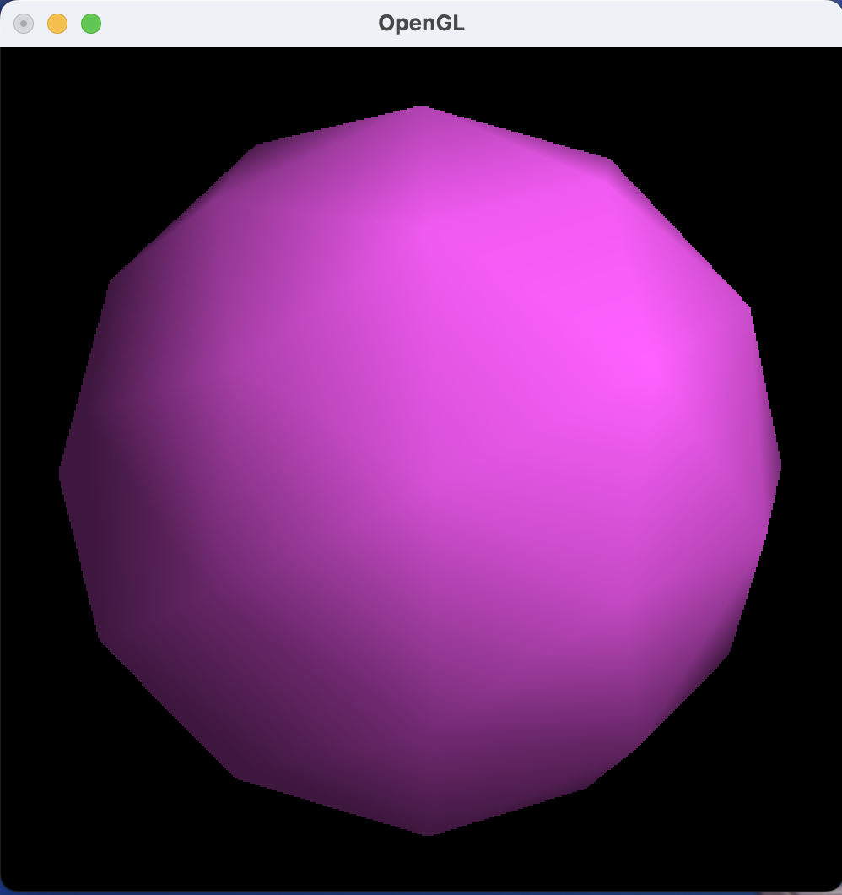
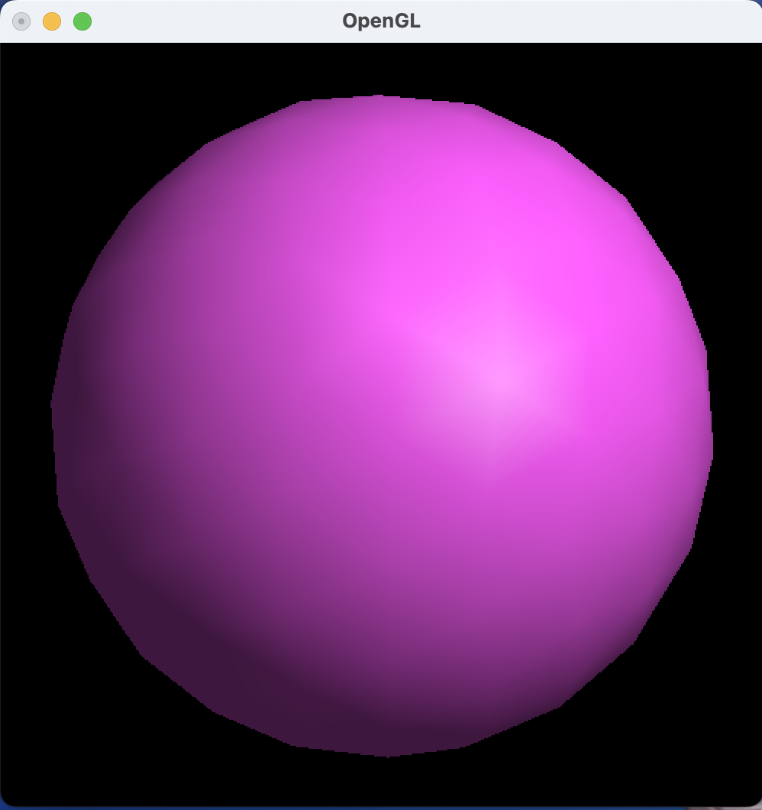
今回は例題5で再帰的に球面近似を行ったプログラムにスムーズシェーディングを施すことでより滑らかな多面体近似球面を描画するプログラムを走らせた。
例題5では各面の稜線が目立つという課題があった。そこでtrinangleメソッドで面を描画する際にスムーズシェーディングを指定し、各頂点の座標と法線ベクトルを与えることで各面の境界が目立たないようにした。
実行結果は画像の通りで、例題5で目立っていた稜線が目立たず、同じ2回の再帰回数の場合でもはるかに球面らしく描画された。
1 import numpy as np
2
3 from myShadeCanvas import MyShadeCanvas # myShadeCanvasモジュールのimport
4 from fractal import Fractal, getArgs
5 from shadedCube import ShadedCube
6
7
8 class MengerSponge(Fractal):
9 def __init__(self, times):
10 cube = ShadedCube()
11 nv = len(cube.vertices)
12 ne = len(cube.edges)
13 SCL = 1/3
14 vecs = []
15 for i in range(nv):
16 vecs.append(np.array(cube.vertices[i]) * (1-SCL))
17
18 for i in range(ne):
19 mid = (np.array(cube.vertices[cube.edges[i][0]]) +
20 np.array(cube.vertices[cube.edges[i][1]])) / 2
21 vecs.append(mid * (1-SCL))
22
23 super().__init__(cube, SCL, vecs, times)
24
25
26 def main():
27 times, args = getArgs()
28 canvas = MyShadeCanvas()
29 dispObj = MengerSponge(times)
30 canvas.init(dispObj)
31 canvas.argsInit(args)
32 canvas.loop()
33
34
35 if __name__ == "__main__":
36 main()
$ python mengerSponge.py 3
(文字列の表示なし)
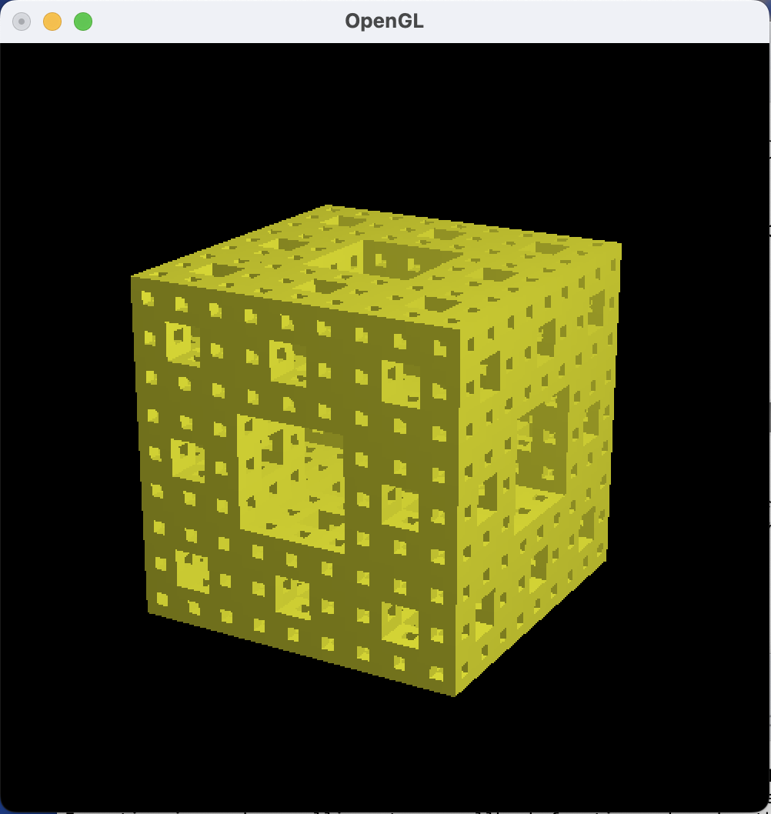
今回は、第12章で作成したメンガースポンジにシェーディングを施したものを描画するプログラムを走らせた。
変更点は主に2つでCubeインスタンスをShadedCubeインスタンスに変更したことと、canvasをMyGLCanvasからMyShadeCanvasにしたことである。一度canvasを変更せずにプログラムを実行したところ真っ白な立方体が描画されてしまった。それはcanvasによって光源位置が指定できなかったからだと推測する。
実行結果は画像の通りで、右側が明るく、左側が暗くなったメンガースポンジが得られた。ただ内部中央を見てみると光源向きの面は内部であるにもかかわらず明るく描画されている。前々回の課題の隠面消去の考え方で解決できると考えた。
3時間
光の反射特性を3種類に分けてそれぞれ数学的に理解するのが難しかった。
私たちが日常生活で何気なくみる立体を、自然に見えるようにするためにはたくさんの数学的な計算処理が行われていることを実際にプログラムを書いて走らせることで実感できました。